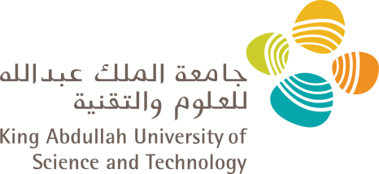

About Me
Siyuan Chen (陈思远) is currently a Ph.D. candidate in Computer Science at King Abdullah University of Science and Technology (KAUST), supervised by Professor Xin Gao in the Structural and Functional Bioinformatics (SFB) Group, and co-supervised by Professor Yu Li from CUHK. His research focuses on developing advanced AI algorithms and computational frameworks to address complex challenges in healthcare. Before that, he did his bachelors at UESTC, advised by Professor Yang Hu and Professor Yan Chen.
Research Interests
- Agentic Workflow and Large Language Models for Healthcare
- Medical Image Analysis
- AI for Science
News
- 2026.08 One paper on safety evaluation of large reasoning models was accepted to the EMNLP Main Conference.
- 2026.03 One paper on a foundation model for generalizable cytogenetics was accepted by npj Precision Oncology.
- 2025.12 One review on large language models in biomedicine and healthcare was accepted by npj Artificial Intelligence.
- 2025.08 One paper on noise-tolerant cleaning of bone marrow karyotyping data was accepted by IEEE Journal of Biomedical and Health Informatics.
- 2024.08 One paper on genome-wide chromatin loop mapping was accepted by Genome Research.
- 2024.02 One paper on privacy-preserving federated learning for omic data was accepted by Science Advances.
Publications
Journal & Conference (* equal contribution, # correspondence)
- TRACE: An Evidence-Grounded Benchmark for Safety Evaluation of Large Reasoning Models EMNLP Main Conference, 2026paper
- A comprehensive foundation model for generalizable cytogenetics in precision oncology with CHROMA npj Precision Oncology, 2026paper
- Large Language Models in Biomedicine and Healthcare npj Artificial Intelligence, 2025paper
- NoTAC: A Noise-Tolerance Automatic Cleaning Framework for Bone Marrow Karyotyping Data IEEE-JBHI, 2025paper
- A fast and adaptive detection framework for genome-wide chromatin loop mapping from Hi-C data Genome Research, 2024paper
- BR-CHromNet: Banding Resolution localization of CHromosome structural abnormality with conditional random field Journal of Molecular Biology, 2024paper
- KaryoXpert: An accurate chromosome segmentation and classification framework for karyotyping analysis without training with manually labeled metaphase-image mask annotations Computers in Biology and Medicine, 2024paper
- PPML-Omics: a Privacy-Preserving federated Machine Learning system protects patients’ privacy from omic data Science Advances, 2024papernews
- An AI Agent for Fully Automated Multi-omic Analyses Advanced Science, 2024paper
- ProNet DB: A proteome-wise database for protein surface property representations and RNA-binding profiles Database: The Journal of Biological Databases and Curation, 2024paper
- A comprehensive benchmarking with practical guidelines for cellular deconvolution of spatial transcriptomics Nature Communications, 2023paper
- Deep learning identifies and quantifies recombination hotspot determinants Bioinformatics, 2022paper
- The highly conserved RNA-binding specificity of nucleocapsid protein facilitates the identification of drugs with broad anti-coronavirus activity Computational and Structural Biotechnology Journal, 2022paper
- Self-supervised contrastive learning for integrative single cell RNA-seq data analysis Briefings in Bioinformatics, 2022paper
- Protein-RNA interaction prediction with deep learning: Structure matters Briefings in Bioinformatics, 2021paper
- Lunar features detection for energy discovery via deep learning Applied Energy, 2021papernews
Preprint / Under Review (* equal contribution)
- Perturb-and-Restore: Simulation-driven Structural Augmentation Framework for Imbalance Chromosomal Anomaly Detection 2025
Education

Ph.D. candidate in Computer Science
King Abdullah University of Science and Technology, Saudi Arabia
Jan 2022 – Present
M.S. in Computer Science
King Abdullah University of Science and Technology, Saudi Arabia
Aug 2020 – Dec 2021
B.E. in Engineering
Sept 2016 – Jun 2020
B.E. in Finance (Double Degree)
Sept 2016 – Jun 2020
Experiences
- Sep 2025 – Dec 2025 On-campus Teaching Assistant, CS220 Data Analytics King Abdullah University of Science and Technology (KAUST), Riyadh, Saudi Arabia
- Sep 2023 – Dec 2023 On-campus Teaching Assistant, CS398 Graduate Seminar King Abdullah University of Science and Technology (KAUST), Saudi Arabia
- Sep 2023 – Dec 2023 Teaching Assistant, CS220 Data Analytics Ministry of Interior (MOI), King Fahad Security College (KFSC), Riyadh, Saudi Arabia
- May 2023 Teaching Assistant, DSA009 Data Analytics Saudi Aramco, Dammam, Saudi Arabia
- Jan 2023 Administrator, The 21st International Conference on Bioinformatics (InCoB2022) KAUST, Saudi Arabia
- Jul 2022 – Sep 2022 Visiting Scholar The Chinese University of Hong Kong, Hong Kong, China